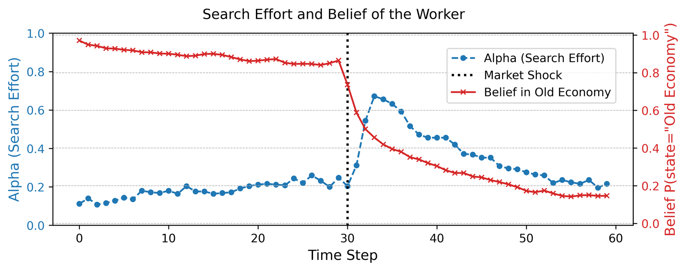
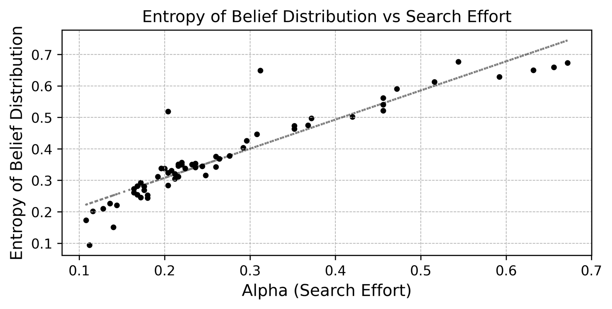
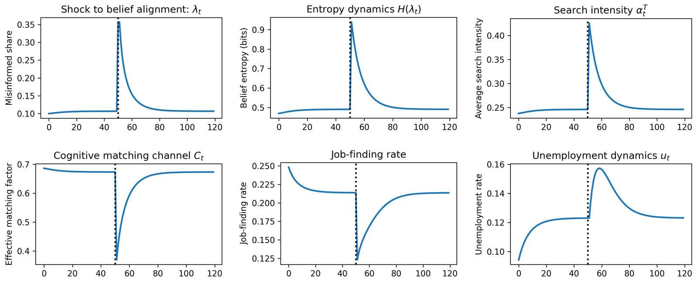
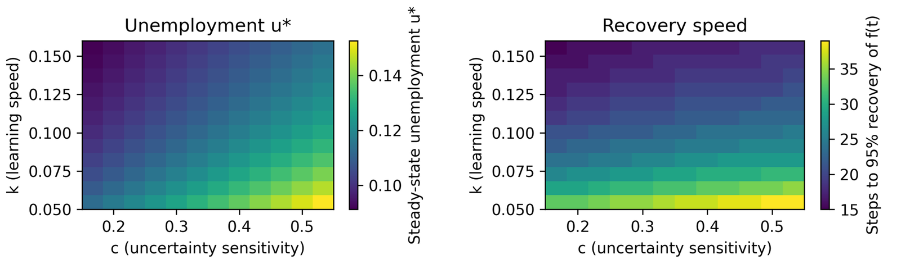

摘要
在大衰退期间，劳动力市场往往表现为失业率恢复缓慢、贝弗里奇曲线持续外移，这意味着就业匹配过程的效率下降。这一现象通常用劳动者的搜寻强度来解释；我们认为搜寻行为的方向同样重要，并基于自由能原理提出了一个风格化的理论模型。模型中的主体主动在申请工作和了解市场新状态之间分配精力。我们的框架表明，不确定性较高时，主体会内生地把精力从申请工作转向学习。在这一微观基础上，我们构建了一个宏观经济模型，其中匹配效率不再是外生参数，而是由两个认知因素决定：信念有误的失业者所占比例，以及信息正确者的平均学习投入。仿真结果显示，结构性冲击会造成广泛的不确定性，使精力转向学习并压低匹配效率，随后的缓慢恢复取决于集体信念的重新校准。我们的工作为观察到的失业持续性和贝弗里奇曲线的移动提供了一种认知层面的解释。
模型
结构性变化发生后，求职者并不知道劳动力市场处于哪种状态。每个劳动者把一单位精力分配到了解市场信息（比例 α）和申请工作（1 − α）两方面。在主动推断框架下，劳动者选择使预期自由能最小的分配方式；预期自由能包含实用项（找到工作）和认知项（减少对市场状态的不确定性）。基于错误信念的申请很少成功。
将这些劳动者加总后，匹配效率成为内生变量，由信念有误的失业者比例 λt 和信息正确者的平均信息收集投入 ᾱt 共同决定。λt 受三方面影响：新失业者的流入、信息正确者更快地找到工作，以及以速率 k 进行的学习。平均投入随集体不确定性上升，不确定性用信念分布的熵衡量，敏感度为 c。
 图 1. 概览。匹配效率 μt = (1 − λt)(1 − ᾱt) μ0 随劳动者的集体信念和不确定性变化。
图 1. 概览。匹配效率 μt = (1 − λt)(1 − ᾱt) μ0 随劳动者的集体信念和不确定性变化。
结果
个体劳动者
市场状态改变后，劳动者对旧状态的信念逐渐下降，精力从申请工作转向收集信息；信念调整完成后，精力又回到申请工作上。在各个时期，信息收集投入随信念熵的增大而增加。

图 2. 信念与搜寻投入对结构性冲击的动态响应：主体对初始市场状态的信念，以及用于信息收集的精力比例 α。永久性结构冲击发生在 t = 30。

图 3. 信息收集投入 αt 与主体信念熵 Ht 的关系。
劳动力市场
提高信念有误者比例的冲击会增加集体不确定性，并把精力从申请工作中抽走。认知匹配通道和工作发现率随之下降，失业率上升，并随着信念重新校准而缓慢回落。由于匹配效率下降会使贝弗里奇曲线外移，模型由此把这种缓慢恢复与贝弗里奇曲线的持续外移联系起来。

图 4. t = 50 时的一次性结构冲击提高了信念有误者比例 λt，空缺率保持不变。各子图依次为信念偏差、不确定性、信息投入、认知匹配通道、工作发现率和失业率的脉冲响应。
政策含义
模型给出两个政策着力点。加快信念校准（提高 k），例如通过就业咨询和反馈及时的再培训，可以缩短信念偏差阶段；改善信息环境（降低 c），例如提供更清晰的职位与技能信息，可以减少信息正确者花在学习上的精力。两者都能降低稳态失业率并缩短恢复时间。

图 5. 左：稳态失业率随学习速度 k 和不确定性敏感度 c 的变化。右：工作发现率恢复到冲击前水平 95% 所需的步数。
下面的仿真对选定的 (k, c) 运行图 4 中的模型，并与基准参数比较。